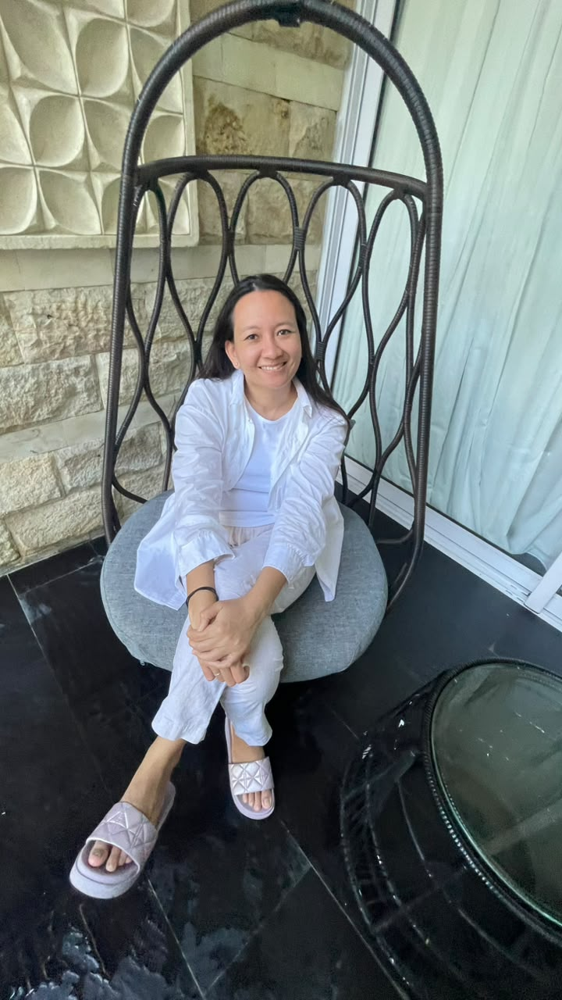

Order in the everyday.
Document preparation, data entry, filing, and scheduling. Keeping information clear, accurate, and easy to find.
Administration & documentationA thoughtful approach to everyday work
Hi, I’m Madeleinne. I bring care and clarity to operations, administration, and the conversations that keep a business moving.

01 / A little about me
I enjoy bringing people, plans, and details together.
I’m a Communications graduate from the London School of Public Relations in Jakarta. My work has taken me from client presentations and financial services to restaurant operations and running my own food business.
Across these different settings, the common thread is care, keeping records accurate, following through on commitments, and helping people feel heard. I’m interested in administrative roles where excellent service and strong working relationships matter.
02 / What I bring
Practical skills, built through hands-on work with customers, teams, and day-to-day operations.
Document preparation, data entry, filing, and scheduling. Keeping information clear, accurate, and easy to find.
Administration & documentationCoordinating orders, production, purchasing, and deliveries. Helping teams and vendors stay on the same page.
Operations & coordinationSupporting customers, resolving concerns, and keeping clients informed. Creating and scheduling social media content.
Client service & communication03 / My experience
From an independent business to established teams, a career shaped by service and responsibility.
Managing the everyday moving parts of a food business, from the first customer message to the final delivery.
Supported restaurant operations and preparations for a new branch in Kelapa Gading.
Connected buyers and sellers of medical supplies during the pandemic, supporting retail and corporate orders.
Completed training in Indonesia’s capital market and supported clients through the securities account opening process.
Supported the account and creative teams with research, presentations, and event coordination.
04 / My foundation
Education
London School of Public Relations, Jakarta
Graduated 2012Working knowledge of the tools that help keep work organized and communication clear.
Indonesian Fluent
English Good working proficiency, spoken & written
Let’s start a conversation
Looking for a thoughtful addition to your team?
I’d love to hear about the role and how I could contribute.